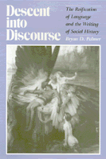

Arguing that the current reliance on poststructuralism obscures the origins, meanings, and consequences of historical events and processes
Arguing that the current reliance on poststructuralism obscures the origins, meanings, and consequences of historical events and processes


 Arguing that the current reliance on poststructuralism obscures the origins, meanings, and consequences of historical events and processes
Arguing that the current reliance on poststructuralism obscures the origins, meanings, and consequences of historical events and processes

|  |
Descent into DiscourseThe Reification of Language and the Writing of Social HistoryBryan D. Palmerpaper EAN: 978-0-87722-720-5 (ISBN: 0-87722-720-9) |
"A spirited and telling critique of the fashionable tendency to substitute language for history [and]...a promising discussion of the nature and flexibility of historical materialism.... [A] feisty and provocative book."
—Elizabeth Fox-Genovese
"Critical theory is no substitute for historical materialism; language is not life." With this statement, Bryan Palmer enters the debate that is now transforming and disrupting a number of academic disciplines, including political science, women�s studies, and history. Focusing on the ways in which literary or critical theory is being promoted within the field of social history, he argues forcefully that the current reliance on poststructuralism—with its reification of discourse and avoidance of the structures of oppression and struggles of resistance—obscures the origins, meanings, and consequences of historical events and processes.
Palmer is concerned with the emergence of "language" as a central focus of intellectual work in the twentieth century. He locates the implosion of theory that moved structuralism in the direction of poststructuralism and deconstruction in what he calls the descent into discourse. Few historians who champion poststructuralist thought, according to Palmer, appreciate historical materialism�s capacity to address discourse meaningfully. Nor do many of the advocates of language within the field of social history have an adequate grounding in the theoretical making of the project they champion so ardently. Palmer roots his polemical challenge in an effort to "introduce historians more fully to the theoretical writing that many are alluding to and drawing from rather cavalierly."
Acknowledging that critical theory can contribute to an understanding of some aspects of the past, Palmer nevertheless argues for the centrality of materialism to the project of history. In specific discussions of how critical theory is constructing histories of politics, class, and gender, he traces the development of the descent into discourse within social history, mapping the limitations of recent revisionist texts. Much of this writing, he contends, is undertheorized and represents a problematic retreat from prior histories that attempted to address such material forces as economic structures, political power, and class struggle.
Descent into Discourse counters current intellectual fashion with an eloquent argument for the necessity to analyze and appreciate lived experience and the structures of subordination and power in any quest for historical meaning.
"Palmer has taken a singularly daunting body of theoretical and historical work and subjected it to a scrutiny that is always pointed, often sympathetic, and never dull. The book is an impressive example of synthesis and critique, and it is sure to be widely discussed and debated."
—Jean-Christophe Agnew, Yale University
Bryan D. Palmer is Professor of History at Queen's University, Ontario.
Critical Perspectives on the Past, edited by Susan Porter Benson, Stephen Brier, and Roy Rosenzweig.
Critical Perspectives on the Past, edited by Susan Porter Benson, Stephen Brier, and Roy Rosenzweig, is concerned with the traditional and nontraditional ways in which historical ideas are formed. In its attentiveness to issues of race, class, and gender and to the role of human agency in shaping events, the series is as critical of traditional historical method as content. Emphasizing that history is itself an interpretation of material events, the series demonstrates that the historian's choices of subject, narrative technique, and documentation are politically as well as intellectually constructed.
© 2015 Temple University. All Rights Reserved. This page: http://www.temple.edu/tempress/titles/648_reg.html.